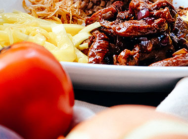

Food 1
Although leafy vegetables come from a very wide variety of plants, most share a great deal with other leaf vegetables in nutrition and cooking methods.Tomato may also be referred to as love apple.

Food 2
Spicy things have a sharp, strong, pungent flavor. Hot chili peppers—and food that's made with them—are notoriously spicy.But if you love the way curries tingle on your tongue, then you're a fan of spicy dishes.

Food 3
Everyone loves a good French Fry. In fact, people are so loyal to certain restaurants based on the quality of their fries.Here this restaurant come into picture for Quality.